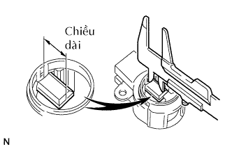
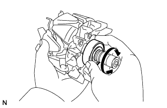
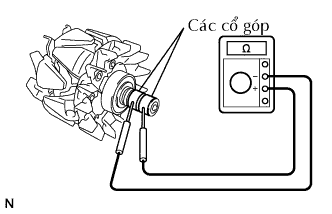
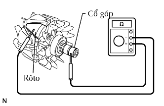
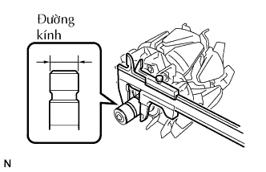
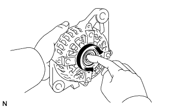

MÁY PHÁT > KIỂM TRA |
| 1. KIỂM TRA CỤM GIÁ ĐỠ CHỔI THAN MÁY PHÁT |
|  |
Dùng thước cặp, đo chiều dài của chổi than.
| 2. KIỂM TRA CỤM RÔTO MÁY PHÁT |
|  |
Kiểm tra rằng vòng bị không bị rơ hoặc mòn.
Nếu cần, hãy thay thế cụm rôto.
|  |
Kiểm tra điện trở.
Đo điện trở giữa các thanh cổ góp.
|  |
Đo điện trở giữa cổ góp và rôto.
Kiểm tra đường kính cổ góp.
Kiểm tra rằng cổ góp không đảo và xước.
Nếu bị đảo hoặc xước, hãy thay cụm rôto.
|  |
Dùng thước cặp, đo đường kính cổ góp.
| 3. KIỂM TRA VÒNG BI KHUNG ĐẦU DẪN ĐỘNG MÁY PHÁT |
|  |
Kiểm tra rằng vòng bị không bị rơ hoặc mòn.
Nếu cần, hãy thay thế vòng bi.